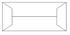
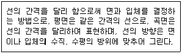
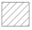

전산응용건축제도기능사 (2013-10-12 기출문제)
1과목: 건축구조
1. 각종 구조에 대한 설명 중 옳지 않은 것은?
- 경량철골구조 - 내화, 내구성이 좋지 않다.
- 목구조 - 내화, 내구적이지 못하다.
- 철근콘크리트 구조 - 내구, 내진, 내화성이 뛰어나다.
- 벽돌구조 - 내진적이며 고층건물에 적합하다.
(정답률: 87%)

2. 곡면판이 지니는 역학적 특성을 응용한 구조로서 외력은 주로 판의 면내력으로 전달되기 때문에 경량이고 내력이 큰 구조물을 구성할 수 있는 것은?
- 철골구조
- 셸구조
- 현수구조
- 커튼월구조
(정답률: 82%)
3. 블록구조의 기초 및 테두리보에 대한 설명으로 옳지 않은 것은?
- 기초보는 벽체 하부를 연결하고 집중 또는 국부적 하중을 균등히 지반에 분포시킨다.
- 테두리보의 나비를 크게 할 필요가 있을 때에는 경제적으로 ㄱ자형, T자형으로 한다.
- 테두리보는 분산된 벽체를 일체로 연결하여 하중을 균등히 분포시키는 역할을 한다.
- 기초보의 춤은 처마높이의 1/12 이하가 적절하다.
(정답률: 66%)
4. 토대, 보, 도리 등의 가로재가 서로 수평으로 맞추어지는 곳을 안정한 세모구조로 하기 위하여 설치하는 것은?
- 귀잡이보
- 꿸대
- 가새
- 버팀대
(정답률: 38%)
5. 1방향 슬래브에 대하여 배근방법을 옳게 설명한 것은?
- 단변방향으로만 배근한다.
- 장변방향으로만 배근한다.
- 단변방향은 온도철근을 배근하고, 장변방향은 주근을 배근한다.
- 단변방향은 주근을 배근하고 장변방향은 온도철근을 배근한다.
(정답률: 60%)
6. 왕대공 지붕틀에서 평보와 왕대공의 맞춤에 사용되는 보강 철물은?
- 감잡이쇠
- 띠쇠
- 꺽쇠
- 주걱볼트
(정답률: 54%)
7. 아래 그림과 같은 지붕 평면도를 가진 지붕의 명칭은?

- 박공지붕
- 합각지붕
- 모임지붕
- 방형지붕
(정답률: 74%)
8. 목조 계단에서 양끝에 세우는 굵은 난간 동자의 명칭은?
- 계단멍에
- 두겁대
- 엄지기둥
- 디딤판
(정답률: 62%)
9. 바닥 슬래브 전체가 기초판 역할을 하는 것은?
- 매트기초
- 복합기초
- 독립기초
- 줄기초
(정답률: 71%)
10. 실내부의 벽하부에서 1 ~ 1.5m 정도의 높이로 설치하여 밑부분을 보호하고 장식을 겸한 용도로 사용하는 것은?
- 걸레받이
- 고막이널
- 징두리판벽
- 코펜하겐리브
(정답률: 51%)
11. 돔의 하부에서 밖으로 퍼져 나가는 힘에 저항하기 위해 설치하는 것은?
- 압축링
- 인장링
- 래티스
- 스페이스 트러스
(정답률: 65%)
12. 다음 중 형상에 따른 계단의 분류에 속하지 않은 것은?
- 틀계단
- 돌음계단
- 곧은계단
- 꺾은계단
(정답률: 64%)
13. 조적식 벽체의 길이가 10m를 넘을 때, 벽체를 보강하기 위해 사용되는 것이 아닌 것은?
- 부축벽
- 수벽
- 붙임벽
- 붙임기둥
(정답률: 66%)
14. 벽돌 쌓기법 중 모서리에 칠오토막을 사용하여 통줄눈이 되지 않도록 하는 벽돌쌓기 방법은?
- 영국식 쌓기
- 화란식 쌓기
- 프랑스식 쌓기
- 미국식 쌓기
(정답률: 77%)
15. 벽돌벽체 내쌓기에 있어서 한켜씩 내쌓을 경우 그 내미는 길이의 한도는?
- 1/1 B
- 1/2 B
- 1/4 B
- 1/8 B
(정답률: 76%)
16. 다음 각 접합부와 철물의 사용이 옳지 않은 것은?
- 평기둥과 층도리 - 띠쇠
- 토대와 기둥 - 앵커 볼트
- 큰보와 작은보 - 안장쇠
- ㅅ자보와 중도리 - 꺽쇠
(정답률: 50%)
17. 콘크리트와 철근 사이의 부착력에 영향을 주는 것이 아닌 것은?
- 철근의 항복점
- 콘크리트의 압축력
- 철근 표면적
- 철근의 표면상태의 단면모양
(정답률: 55%)
18. 철근콘크리트 압축부재 중 직사각형 기둥의 축방향 주철근의 최소 개수는?
- 3개
- 4개
- 6개
- 8개
(정답률: 86%)
19. 철골구조의 판보(plate girder)에서 웨브의 좌굴을 방지하기 위하여 사용되는 것은?
- 거셋 플레이트
- 플랜지
- 스티프너
- 리브
(정답률: 77%)
20. 철골구조에서 고력볼트 접합에 대한 설명 중 옳지 않은 것은?
- 마찰접합 지압접합 등이 있다.
- 볼트가 쉽게 풀리는 단점이 있다.
- 피로강도가 높다.
- 접합부의 강성이 높다.
(정답률: 80%)
2과목: 건축재료
21. 석재의 내구성이 오랜 세월이 지나면 감소하는 이유로 가장 거리가 먼 것은?
- 빗물속의 산소 이산화탄소 등에 의한 석재의 표면 침해
- 온도의 변화에 따른 광물의 팽창과 수축에 의한 석재의 갈라짐
- 동결과 융해작용의 반복에 의한 적재의 파괴
- 공기 속 질소의 영향으로 인한 석재 내부의 파괴
(정답률: 66%)
22. 다음 석재 중 변성암에 속하는 것은?
- 안산암
- 석회암
- 응회암
- 사문암
(정답률: 53%)
23. 대리석의 일종으로 다공질이며 황갈색의 무늬가 있으며 특수한 실내장식재로 이용되는 것은?
- 테라코타
- 트래버틴
- 점판암
- 석회암
(정답률: 57%)
24. 다음 석재 중 색체, 무늬 등이 다양하여 건물의 실내마감 장식재로 가장 적합한 것은?
- 점판암
- 대리석
- 화강암
- 안산암
(정답률: 89%)
25. 목재 합판을 가장 잘 설명한 것은?
- 목재를 얇은 판으로 만들어 이들을 섬유방향이 서로 직교되도록 홀수로 적층하면서 접착시켜 만든 판을 말한다.
- 목재 및 기타 식물의 섬유질소편에 합성수지접착제를 도포하여 가열압착성형한 판상제품이다.
- 목재 또는 기타 식물을 섬유화하여 성형한 판상제품의 총칭이다.
- 목편, 목모, 목질섬유 등과 시멘트를 혼합하여 성형한 보드를 말한다.
(정답률: 59%)
26. 다음 중 목재의 장점이 아닌 것은?
- 가공과 운반이 쉽다.
- 외관이 아름답고 감촉이 좋다.
- 중량에 비하여 강도와 탄성이 크다.
- 함수율에 따라 팽창과 수축이 작다.
(정답률: 72%)
27. 베니어의 제법 중 슬라이더베니어에 대한 설명으로 옳은 것은?
- 얼마든지 넓은 판을 얻을 수 있으며 원목의 낭비가 없다.
- 합판 표면에 아름다운 무늬를 얻을 때 사용한다.
- 원목을 일정한 길이로 절단하여 이것을 회전시키면서 연속적으로 제작한다.
- 판재와 각재를 집성하여 대재를 얻을 때 사용한다.
(정답률: 52%)
28. 콘크리트면, 모르타르면의 바름에 가장 적합한 도료는?
- 옻칠
- 래커
- 유성페인트
- 수성페인트
(정답률: 48%)
29. 콘크리트의 배합에서 물시멘트비와 가장 관계 깊은 것은?
- 강도
- 내동해성
- 내화성
- 내수성
(정답률: 74%)
30. 콘크리트용 혼화재 중 콘크리트의 발열량을 높게 하는 것은?
- 경화촉진제
- A.E제
- 포졸란
- 방수제
(정답률: 55%)
31. 시멘트제품의 양생법 중 가장 이상적인 것은?(오류 신고가 접수된 문제입니다. 반드시 정답과 해설을 확인하시기 바랍니다.)
- 통풍을 막고 직사광선을 피하여 건조시킨다.
- 가열을 해서 속히 건조시킨다.
- 영하의 저온환경에서 건조시킨다.
- 적당한 온도와 습도를 위해서 수중양생을 한다.
(정답률: 57%)
32. 회반죽 바름은 공기 중의 어느 성분과 작용하여 경화하게 되는가?
- 산소
- 탄산가스
- 질소
- 수소
(정답률: 77%)
33. 길이가 폭의 3배 이상으로 가늘고 길게 된 타일로서 징두리벽 등의 장식용에 사용되는 것은?
- 스크래치 타일
- 보더 타일
- 모자이크 타일
- 논슬립 타일
(정답률: 56%)
34. 지하실이나 옥상의 채광용으로 입사 광선의 방향을 바꾸거나 확산 또는 집중시킬 목적으로 사용되는 유리제품은?
- 폼글라스
- 프리즘타일
- 안전유리
- 강화유리
(정답률: 81%)
35. 단열유리라고도 하며 철, 니켈, 크롬 등이 들어 있는 유리로서 담청색을 때고 태양광선중에 장파부분을 흡수하는 유리는?
- 열선 흡수유리
- 열선 반사유리
- 자외선 투과유리
- 자외선 차단유리
(정답률: 63%)
36. 알루미늄의 특성에 대한 설명으로 옳지 않은 것은?
- 산, 알칼리 및 해수에 침식되지 않는다.
- 연질이므로 가공성이 뛰어나다.
- 전기전도성 및 반사율이 뛰어나다.
- 내화성이 약하다.
(정답률: 77%)
37. 금속제품 중 목재의 이음 철물로 사용되지 않는 것은?
- 안장쇠
- 꺽쇠
- 인서트
- 띠쇠
(정답률: 76%)
38. 금속의 방식법에 대한 설명 중 옳지 않는 것은?
- 도료나 내식성이 큰 금속으로 표면에 피막을 하여 보호한다.
- 균질한 재료를 사용한다.
- 다른 종류의 금속을 서로 잇대어 사용한다.
- 표면은 깨끗하게 하고 물기나 습기가 없도록 한다.
(정답률: 85%)
39. 다음 중 열가소성수지가 아닌 것은?
- 염화비닐수지
- 아크릴수지
- 초산비닐수지
- 요소수지
(정답률: 50%)
40. 유체가 유동하고 있을 때 유체의 내부에 흐름을 저지하려고 하는 내부 마찰 저항이 발생하는 성질에 해당하는 역학적 설명은?
- 탄성
- 소성
- 점성
- 외력
(정답률: 62%)
3과목: 건축계획 및 제도
41. 건축법령상 주요구조부에 속하지 않는 것은?
- 기둥
- 지붕틀
- 내력벽
- 옥외계단
(정답률: 82%)
42. 연면적 200m2을 초과하는 초등학교의 학생용 계단의 단 높이는 최대 얼마 이하이어야 하는가?
- 15㎝
- 16㎝
- 18㎝
- 20㎝
(정답률: 50%)
43. 다음 중 기초의 제도시 가장 먼저 해야 할 것은?
- 치수선을 긋고 치수를 기입한다.
- 제도지에 테두리선을 긋고 표제란을 만든다.
- 제도자에 기초의 배치를 적당히 잡아 가로와 세로 나누기를 한다.
- 중심선에서 기초와 벽의 두께, 푸팅 및 잡석 지정의 나비를 양분하여 연하게 그린다.
(정답률: 69%)
44. 주택의 평면계획에서 인접의 원칙에 해당하지 않는 것은?
- 거실 – 현관
- 식당 - 주방
- 식당 - 화장실
- 주방 - 다용도실
(정답률: 83%)
45. 아파트의 평면 형식에 따른 분류에 속하지 않는 것은?
- 판상형
- 집중형
- 계단실형
- 편복도형
(정답률: 66%)
46. 건축도면에서 보이지 않는 부분의 표시에 사용되는 선의 종류는?
- 실선
- 파선
- 1점 쇄선
- 2점 쇄선
(정답률: 82%)
47. 건축도면의 표시기호와 표시사항의 연결이 옳은 것은?
- A - 용접
- W - 너비
- R - 지름
- L - 높이
(정답률: 59%)
48. 아래 보기의 설명에 알맞은 건축물의 입체적 표현 방법은?

- 단선에 의한 표현
- 여러 선에 의한 표현
- 명암 처리만으로의 표현
- 단선과 명암에 의한 표현
(정답률: 70%)
49. 건축도면에서 다음과 같은 단면용 재료 표시 기호가 나타내는 것은?

- 석재
- 인조석
- 목재 치장재
- 목재 구조재
(정답률: 52%)
50. 다음 중 배치도에 표시하지 않아도 되는 사항은?
- 축척
- 건물의 위치
- 대지 경계선
- 각 실의 위치
(정답률: 50%)
51. 건축 도면에서 사람의 배경과 표현을 통해 알 수 있는 것과 가장 거리가 먼 것은?
- 스케일 감
- 공간의 깊이
- 건물의 배치
- 건물 공간의 관습적인 용도
(정답률: 52%)
52. 주택의 거실에 관한 설명으로 옳지 않은 것은?
- 다목적 공간으로서 활용되도록 한다.
- 주택의 단부에 위치시킬 경우, 개인적인 공간과 구분을 명확히 할 수 있다.
- 안정된 거실 분위기를 위해 동선에 유의하고 출입구수를 가능한 한 줄이는 것이 좋다.
- 가족구성원이 많고 주택의 규모가 큰 경우에는 리빙키친을 적용하는 것이 좋다.
(정답률: 60%)
53. 건축물의 에너지 절약을 위한 계획 내용으로 옳지 않은 것은?
- 공동주택은 인동간격을 넓게하여 저층부의 일사수열량을 증대시킨다.
- 건물의 창호는 가능한 작게 설계하고, 특히 열손실이 많은 북측의 창면적은 최소화한다.
- 건축물은 대지의 향, 일조 및 주풍향 등을 고려하여 배치하며, 남향 또는 남동향 배치를 한다.
- 거실의 층고 및 반자 높이는 실의 온도와 기능에 지장을 주지 않는 범위 내에서 가능한 높게 한다.
(정답률: 62%)
54. 금속체를 피보호물에서 돌출시켜 수뢰부로 하는 것으로 투영면적이 비교적 작은 건축물에 적합한 피뢰설비 방식은?
- 돌침
- 가공지선
- 케이지 방식
- 수평도체 방식
(정답률: 62%)
55. LP가스에 관한 설명으로 옳지 않은 것은?
- 비중이 공기보다 크다.
- 발열량이 크며 연소시에 필요한 공기량이 많다.
- 누설이 된다해도 공기 중에 흡수되기 때문에 안전성이 높다.
- 석유정제과정에서 채취된 가스를 압축냉각해서 액화시킨 것이다.
(정답률: 81%)
56. 주택 실구성 형식 중 주방의 일부에 간단한 식탁을 설치하거나 식당과 주방을 하나로 구성한 것은?
- 독립형
- 다이닝 키친
- 리빙 다이닝
- 다이닝 테라스
(정답률: 88%)
57. 전기설비에서 간선의 배선방식에 속하지 않는 것은?
- 평행식
- 루프식
- 나뭇가지식
- 군관리방식
(정답률: 64%)
58. 다음 중 개별식 급탕방식에 속하지 않는 것은?
- 순간식
- 저탕식
- 직접 가열식
- 기수 혼합식
(정답률: 60%)
59. 공기조화방식 중 전공기방식에 관한 설명으로 옳지 않은 것은?
- 덕트 스페이스가 필요하다.
- 중간기에 외기냉방이 가능하다.
- 실내에 배관으로 인한 누수의 우려가 없다.
- 팬코일 유닛방식, 유인 유닛방식 등이 있다.
(정답률: 53%)
60. 형태 조화의 근본이 되는 황금비에 해당하는 비율은?
- 1 : 1.414
- 1 : 1.618
- 1 : 1.732
- 1 : 1.915
(정답률: 88%)